picture post!!
Finally got a chance to upload some pics from the past few days.
Ada, Oklahoma:
Benjamin and April with Karen Jean and “latte” (poking out of Karen’s shirt):

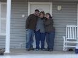
A sunset in Ada:

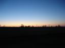
Driving through New Mexico:
Besides the cool cloud patterns, there were some great gradients in the sky color:

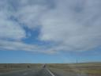

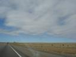

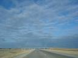
Grand Canyon, Arizona:
Mather Point:


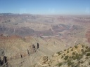

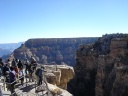
Observation tower and view from the tower at Desert View:


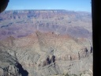
When we got up in the morning, our water jug was frozen solid. The thermometer we keep in the car said it was 25 degrees F when we checked it at 9am.

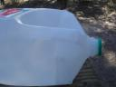
Driving through Arizona:

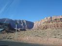

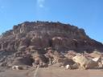

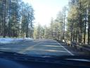

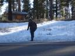
Painted Desert pictures:

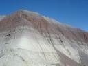

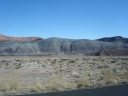

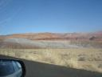
Driving through Utah:

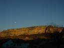

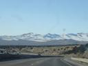

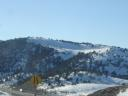

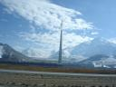
Bonneville Salt Flats:

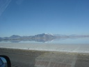

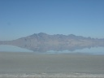